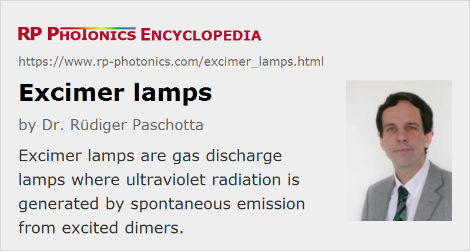

Excimer Lamps
Definition: gas discharge lamps where ultraviolet radiation is generated by spontaneous emission from excited dimers
Alternative term: excilamps
More general term: gas discharge lamps
German: Excimer-Lampen
Category: non-laser light sources
How to cite the article; suggest additional literature
Author: Dr. Rüdiger Paschotta
Excimer lamps (excilamps) are a special type of gas discharge lamps, where the generation of ultraviolet light involves excited dimers (or more generally exciplex molecules). In contrast to excimer lasers, they do not contain a laser resonator and thus exploit only spontaneous emission. They are therefore diffusely emitting lamps, e.g. long tubes emitting to the side, not generating directed spatially coherent laser beams.
After spontaneous emission, the de-excited dimers rapidly dissociate. Therefore, there is basically no reabsorption of the generated radiation (which is known to be a problem e.g. in mercury vapor lamps, where it substantially reduces the power conversion efficiency). This feature is particularly beneficial for lamps operated with a relatively high gas density.
Working pressures of excimer lamps can vary in a wide range, from low-pressure lamps with a few millibars to high-pressure lamps with more than one atmosphere. Even high-pressure excimer lamps are not operated at particularly high plasma temperatures, since the power density is moderate and the radiation efficiency is relatively high. Since high plasma temperatures are not required, there is no substantial warm-up time.
The envelope glass of such a lamp must of course be well transparent for the emission wavelengths. For example, UV-grade fused silica can be used for wavelengths down to somewhat below 200 nm.
Typical Characteristics of Excimer Lamps
Geometric Shapes
Excimer lamps often have the shape of long cylindrical tubes which radiate to the side. However, it is also possible to produce them with various other shapes. For example, there are excimer lamps with a design which is arranged around a flow tube, through which gases or liquids to be irradiated can be sent. Such a geometry is useful for water purification, for example.
Emission Wavelengths
The following table shows the emission wavelengths of common excimer and exciplex species:
| Excimer | Wavelength |
|---|---|
| NeF* | 108 nm |
| Ar2* | 126 nm |
| Kr2* | 146 nm |
| F2* | 158 nm |
| ArBr* | 165 nm |
| Xe2* | 172 nm |
| ArCl* | 175 nm |
| KrI* | 190 nm |
| ArF* | 193 nm |
| KrBr* | 207 nm |
| KrCl* | 222 nm |
| KrF* | 248 nm |
| XeI* | 253 nm |
| Cl2* | 259 nm |
| XeBr* | 282 nm |
| Br2* | 289 nm |
| XeCl* | 308 nm |
| I2* | 342 nm |
| XeF* | 351 nm |
For example, Ar2 and Xe2 are true dimers, while NeF and ArCl should strictly speaking be called exciplex molecules. The star (*) indicates that we dealing with electronically excited species.
The list contains various values in the vacuum UV range (below ≈ 200 nm), where not many alternative solutions are available.
The obtained radiation is essentially quasi-monochromatic; naturally, one UV emission line is clearly dominating. The emission bandwidth is usually a few nanometers. If required, some additional unwanted weaker spectral lines may be filtered out.
Only small amounts of visible and infrared light are emitted. During operation one usually sees some visible glow from additional spectral lines, which however carries a radiant flux which is much weaker than that of the generated UV light.
Continuous or Pulsed Emission
While excimer lasers are basically always pulsed lasers, excimer lamps are often operated in continuous-wave mode. This is because a very high excitation density is not required, and it is no problem to make the emitting volume a bit larger. Typically, the power density is moderate – of the order of 1 W/cm2 for high-pressure lamps and much lower for low-pressure lamps.
The used electrode types and geometries are adapted to the operation mode and excimer type. For example, dielectric barrier discharges (driven with radio frequency) are common for continuously emitting lamps. A beneficial property of that technology is that the electrodes do not need to be in direct contact with the plasma, so that long lamp lifetimes are possible.
Efficiency
The radiant efficiency of excimer lamps can easily reach values of several tens of percent, depending on the excimer species used, but also on details like gas pressure, power density and electrode geometry. The achieved efficiency values are quite favorable in comparison to those of competing technologies.
Lamp Lifetime
With the common dielectric barrier discharge lamps, lifetimes of several thousand hours are achievable. Particularly for lamps with a relatively short emission wavelength, there may be a degradation of transparency of the envelope glass (and thus the light output) due to the formation of color centers.
Applications of Excimer Lamps
Excimer lamps are used in various industries where short-wavelength ultraviolet light is required. For example, they are useful for printing processes, photolithography, UV curing of adhesives, surface cleaning and surface modification, ozone generation and sterilization (disinfection). Often, photochemical processes induced by the ultraviolet light are exploited. In some cases, the deactivation of germs (microbes) is relevant; this can work by the destruction of DNA and RNA, but also by the general mineralization of organic substances at higher radiant exposure.
Mercury vapor lamps are also often used as UV sources; in comparison with those, excimer lamps are environmentally more benign, since the used emitting species are less toxic, if at all problematic. The concrete choice of lamp, however, is often dominated by the required emission wavelength.
Suppliers
The RP Photonics Buyer's Guide contains 5 suppliers for excimer lamps.
Questions and Comments from Users
Here you can submit questions and comments. As far as they get accepted by the author, they will appear above this paragraph together with the author’s answer. The author will decide on acceptance based on certain criteria. Essentially, the issue must be of sufficiently broad interest.
Please do not enter personal data here; we would otherwise delete it soon. (See also our privacy declaration.) If you wish to receive personal feedback or consultancy from the author, please contact him e.g. via e-mail.
By submitting the information, you give your consent to the potential publication of your inputs on our website according to our rules. (If you later retract your consent, we will delete those inputs.) As your inputs are first reviewed by the author, they may be published with some delay.
Bibliography
| [1] | J.-Y. Zhang and I. W. Boyd, “Lifetime investigation of excimer UV sources”, Appl. Surface Science 168, 296 (2000) |
| [2] | T. Oppenländer, “Mercury-free sources of VUV/UV radiation: application of modern excimer lamps (excilamps) for water and air treatment”, J. Environ. Eng. Sci. 6, 253 (2007), doi:10.1139/S06-059 |
See also: excimer lasers
and other articles in the category non-laser light sources
|  |
If you like this page, please share the link with your friends and colleagues, e.g. via social media: 


These sharing buttons are implemented in a privacy-friendly way! |
2020-05-02
Is it possible to produce an excimer lamp with a structure like a fluorescent lamp by filling it with excimers like KrCl or other gases?
Answer from the author:
In principle yes, but various details needs to be observed – for example, the lamp envelope must be UV-transmitting, the electrodes should be made with appropriate materials and geometry, the write operation voltage and current needs to be applied, etc. The gas filling must be an appropriate mixture e.g. of Kr and Cl2; the excimer molecules are formed from that only during operation.